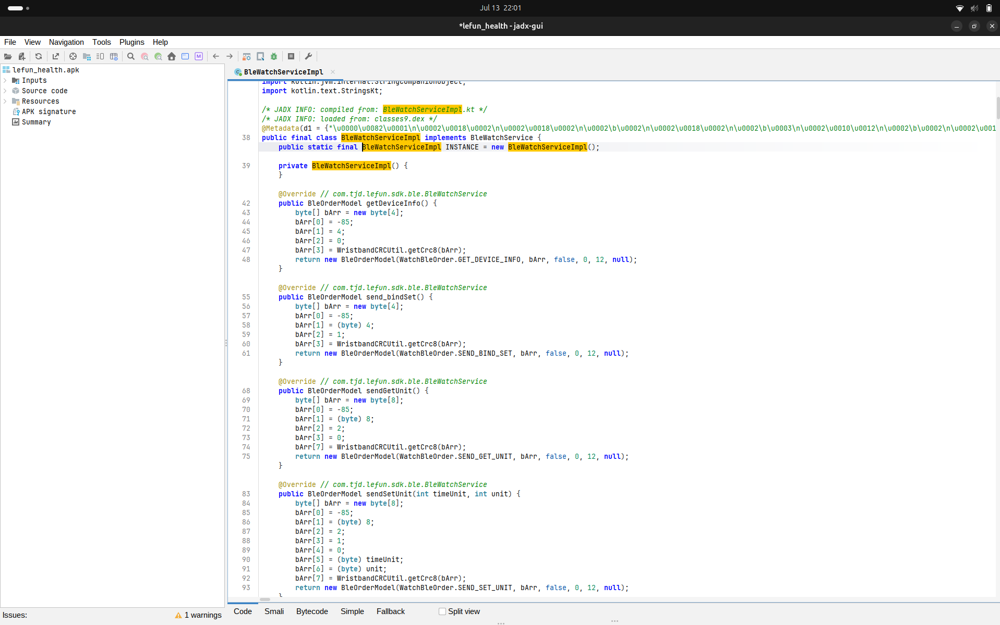
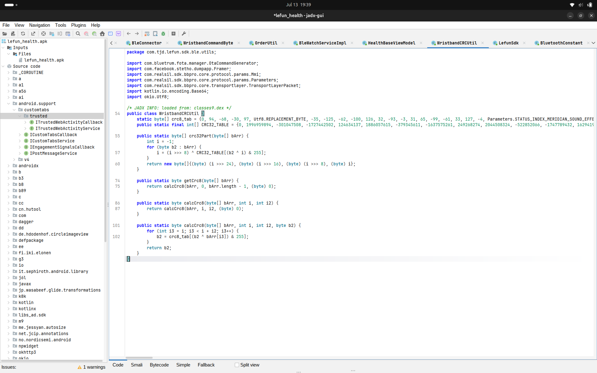
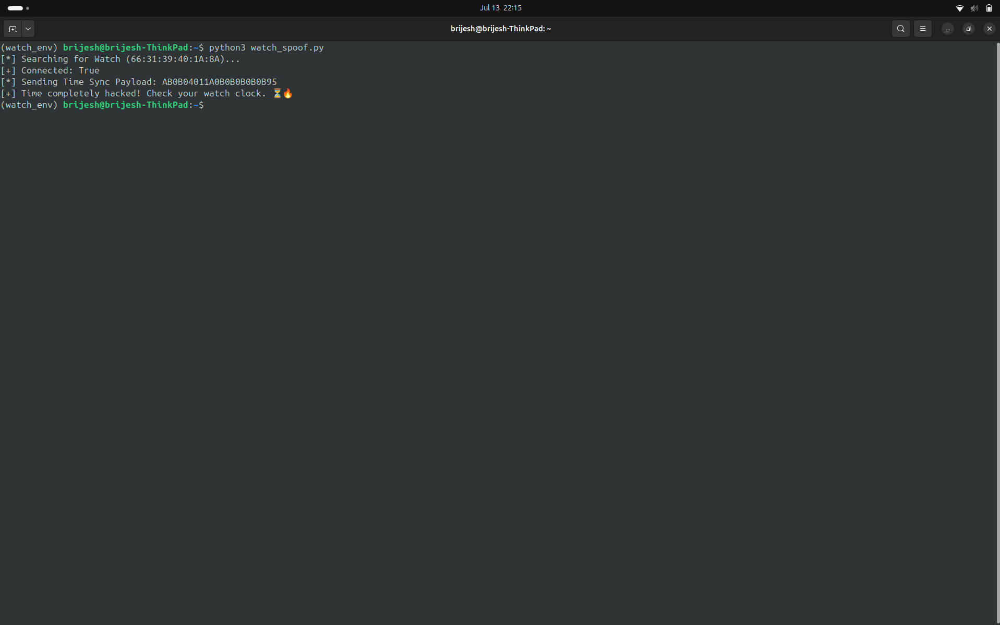
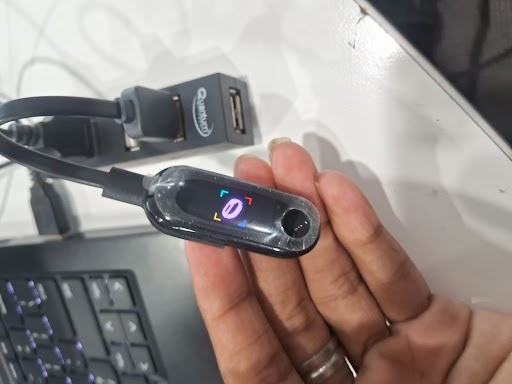
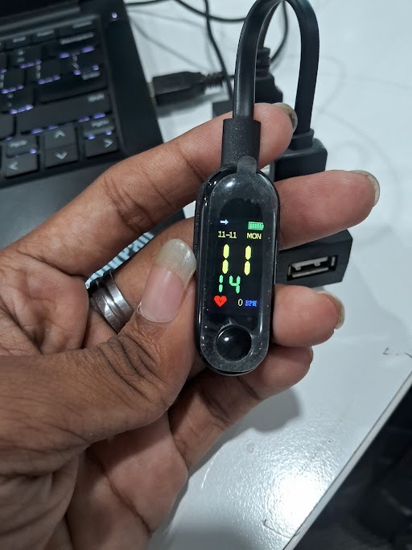
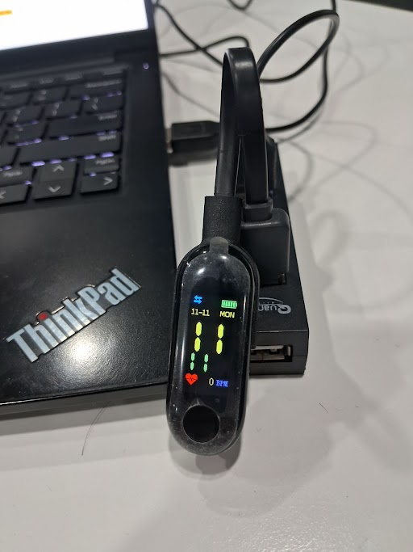
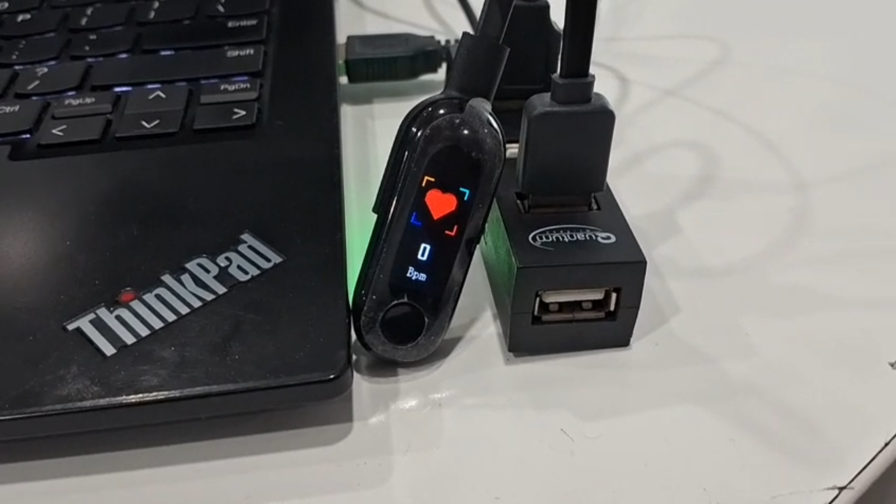

Brijesh Babu K
Independent Security Research
Published: July 2026
Wearable fitness trackers increasingly rely on Bluetooth Low Energy (BLE) as their primary communication channel. The objective of this research is to reconstruct the communication workflow and identify the mechanisms responsible for packet generation, opcode handling, data encoding, checksum validation, and BLE service interaction.
The objective was to reconstruct the proprietary communication protocol, identify the packet structure, recover the CRC algorithm, analyze the Android application, and validate the recovered protocol using custom Python tooling.
This article documents my starting journey of the research in RF and iot.
| Component | Specification |
|---|---|
| Target Device | XXX Smartwatch |
| Operating System | Ubuntu 22.04 LTS |
| Decompiler | JADX-GUI |
| BLE Framework | EXPLIoT |
| Python Library | Bleak |
To understand the communication protocol used by the XXX Smartwatch, I followed two complementary approaches. First, I performed static analysis of the Android application to understand how packets were generated internally. This was followed by dynamic analysis, where Bluetooth Low Energy communication was observed and validated through live experimentation.
The AAA Health Android application (APK) was decompiled using JADX-GUI. The objective of this phase was to identify the classes responsible for Bluetooth communication, packet construction, and checksum generation.
During the analysis, the following classes were identified as key components of the communication protocol:
After completing the APK analysis, Bluetooth Low Energy enumeration was performed using EXPLIoT. This phase identified the GATT services, writable characteristics, and communication endpoints used by the smartwatch.
| Parameter | Value |
|---|---|
| MAC Address | AA:BB:CC:DD:EE:FF |
| Service UUID | 11111111-2222-3333-4444-555555555555 |
| Write Handle | 0x0E |
Following the completion of both static APK analysis and dynamic BLE experimentation, the complete communication workflow between the companion Android application and the XXX Smartwatch was successfully reconstructed.
The reconstructed communication path illustrates how a command generated by the Android application is transformed into a Bluetooth Low Energy packet before being transmitted to the smartwatch through the writable GATT characteristic.
The complete communication pipeline is shown below.
AAA Health Application
|
v
BleWatchServiceImpl
|
v
byte[] Packet Construction
|
v
BleOrderModel
|
v
DeviceManagerService.sendData()
|
v
BleConnector.writeCharacteristic()
|
v
Handle 0x0E
|
v
XXX Smartwatch
This communication pipeline demonstrates the complete flow of a proprietary BLE command—from the Android application, through the packet construction process, and finally to the smartwatch over the writable characteristic (Handle 0x0E). Understanding this workflow was essential for reproducing packets independently and developing custom Python tools capable of communicating directly with the device.
Every packet transmitted between the companion application and the XXX Smartwatch follows a fixed frame format. By analyzing the Android application together with captured BLE traffic, the proprietary packet structure was reconstructed.
The general packet format is shown below.
Packet = [ H , L , C , P1 , P2 , ... , Pn , CRC ]
where,
During the analysis, every observed packet used the same synchronization byte as the packet header.
H = 0xAB
The packet length field (L) is calculated from the payload size using the following equation.
L = PayloadLength + 4
The additional four bytes account for the protocol overhead included in every packet.
| Field | Size |
|---|---|
| Header (H) | 1 Byte |
| Length (L) | 1 Byte |
| Command Opcode (C) | 1 Byte |
| CRC | 1 Byte |
Therefore, the total packet size is obtained by adding the payload length to the four protocol bytes shown above.
Total Packet Size = PayloadLength + 4
Static analysis of the Android application revealed that proprietary BLE packets are constructed inside the BleWatchServiceImpl class. This component is responsible for assembling every command before it is transmitted to the smartwatch.
The packet construction process can be represented using the following structure.
Packet = { Header, Length, Opcode, Payload, CRC }
Every packet generated by the application follows the same sequence of operations before transmission.
After these steps are completed, the finished byte array is transmitted to the smartwatch through the writable BLE characteristic.
The smartwatch stores date and time values as hexadecimal bytes instead of human-readable decimal values. During protocol analysis, the year field was found to be encoded relative to the year 2000.
The encoding formula is shown below.
EncodedYear = Year - 2000
For example,
2026 - 2000 = 26 26 (Decimal) = 0x1A
Additional examples are shown below.
| Year | Calculation | Encoded Value |
|---|---|---|
| 2026 | 2026 - 2000 = 26 | 0x1A |
| 2020 | 2020 - 2000 = 20 | 0x14 |
| 2017 | 2017 - 2000 = 17 | 0x11 |
Using this encoding method, the following date and time
13/07/2026 20:17
is represented by the smartwatch as
1A 07 0D 14 11
where
The CRC-8 checksum used by the smartwatch can be represented mathematically as a state transition function. During packet generation, each byte updates the current checksum state using a lookup table together with the XOR operation.
The checksum update equation is shown below.
CRC(i+1) = crc8_tab[(CRC(i) XOR B(i)) mod 256]
where,
Each packet byte updates the checksum by indexing into the lookup table. After the final byte has been processed, the resulting CRC value is appended to the end of the packet before transmission.
Static analysis of the Android application together with dynamic BLE experiments allowed several proprietary command opcodes to be identified. The following table summarizes the recovered commands and their observed functionality.
| Opcode | Command | Description |
|---|---|---|
| 0x04 | Time Sync | Update the smartwatch real-time clock (RTC). |
| 0x09 | Find Device | Trigger vibration to help locate the smartwatch. |
| 0x17 | Notification | Display incoming notification text on the screen. |
| 0x52 | Heart Rate | Trigger heart rate sensor measurement. |
| 0x58 | Blood Pressure | Trigger blood pressure calibration or measurement. |
| 0x14 | Reboot | Restart the smartwatch. |
These recovered opcodes form the basis of the proprietary communication protocol implemented by the XXX Smartwatch. Understanding their behavior made it possible to reproduce BLE packets and interact directly with the device using custom Python tools instead of the official Android application.
Following protocol reconstruction and experimental validation, a security assessment was performed to evaluate the communication mechanism used by the XXX Smartwatch. The analysis focused on authentication, integrity protection, and the overall security model implemented by the proprietary BLE protocol.
The protocol primarily relies on a proprietary packet format together with CRC-8 checksum validation to verify packet integrity. However, no additional cryptographic protections were observed during either static APK analysis or dynamic BLE experimentation.
The analysis indicates the absence of the following security mechanisms.
As a result, any device capable of generating correctly formatted packets together with a valid CRC-8 checksum can transmit commands that are accepted by the smartwatch.
Consequently, the protocol relies primarily on security through obscurity rather than modern cryptographic security mechanisms. Since packet validation depends only on the packet format and checksum, an attacker who successfully reconstructs the protocol can generate arbitrary commands without requiring cryptographic credentials.
Static analysis of the Android application revealed the complete software path followed by every command before transmission.
The companion application first constructs the command packet inside the BleWatchServiceImpl class. The generated byte array is then encapsulated using the BleOrderModel data structure before being forwarded to DeviceManagerService.sendData().
Finally, the packet reaches the Bluetooth transport layer through the BleConnector.writeCharacteristic() function, which writes the completed packet to the smartwatch using the writable BLE characteristic located at Handle 0x0E.
BleWatchServiceImpl
|
v
BleOrderModel
|
v
DeviceManagerService.sendData()
|
v
BleConnector.writeCharacteristic()
|
v
Handle 0x0E
|
v
XXX Smartwatch
This reconstructed workflow confirms the complete end-to-end transmission path used by the companion application and served as the foundation for reproducing proprietary BLE commands using custom Python tooling.
The XXX Smartwatch validates every transmitted packet using the CRC-8/MAXIM integrity algorithm. During static analysis of the Android application, the checksum implementation was recovered from the WristbandCRCUtil class.
The recovered implementation is shown below.
public static byte calcCrc8(byte[] data,
int start,
int len,
byte crc)
{
for (int i = start; i < start + len; i++)
{
crc = crc8_tab[(crc ^ data[i]) & 0xFF];
}
return crc;
}
The algorithm processes each byte of the packet sequentially. Every byte updates the current CRC state by performing an XOR operation followed by a lookup into the precomputed crc8_tab table. Once all bytes have been processed, the resulting checksum is appended to the end of the BLE packet before transmission.
After reconstructing the proprietary communication protocol, several commands were transmitted directly to the smartwatch using custom Python tooling. The observed behaviour confirmed that the recovered packet structure, opcode library, and CRC-8 implementation were correct.
| Experiment | Status | Observation |
|---|---|---|
| Time Sync | Success | RTC updated successfully. |
| Heart Rate | Success | Sensor measurement triggered. |
| Search Device | Success | Alarm / vibration activated. |
The successful execution of these experiments demonstrates that the reconstructed protocol accurately represents the communication mechanism used by the XXX Smartwatch. The recovered packet format, checksum algorithm, and command opcodes were sufficient to reproduce valid BLE commands without relying on the official companion application.
To validate the reconstructed communication protocol, several Proof of Concept (PoC) experiments were performed using custom Python tooling. These experiments confirmed that the recovered packet format, opcode library, and CRC-8/MAXIM implementation were sufficient to communicate directly with the XXX Smartwatch without relying on the official Android application.
The following figures illustrate the Proof of Concept experiments carried out during this research.






To automate communication with the smartwatch, a collection of custom Python scripts was developed using the Bleak Bluetooth Low Energy library. These scripts implemented the recovered CRC-8/MAXIM checksum algorithm and reproduced the proprietary packet format identified during static analysis of the Android application.
The tooling enabled direct interaction with the smartwatch through the writable GATT characteristic without requiring the official companion application.
The Python toolkit was designed to support the following capabilities.
The successful execution of these scripts demonstrated that the reconstructed protocol accurately represented the smartwatch's communication mechanism and could be reproduced independently using open-source tooling.
One of the primary experiments performed during this research was direct time synchronization of the smartwatch. Instead of relying on the official Android application, a custom BLE packet was manually constructed and transmitted to the writable GATT characteristic recovered during protocol analysis.
The packet generation process consisted of the following steps.
EncodedYear = Year - 2000
The final packet generated for the experiment is shown below.
AB 0B 04 01 1A 07 0D 14 11 00 EB
The individual packet fields are interpreted as follows.
| Byte | Value | Meaning |
|---|---|---|
| 0 | AB | Packet Header |
| 1 | 0B | Packet Length |
| 2 | 04 | Time Synchronization Opcode |
| 3 | 01 | Sub-command |
| 4 | 1A | Year (2026 − 2000) |
| 5 | 07 | Month |
| 6 | 0D | Day |
| 7 | 14 | Hour (20) |
| 8 | 11 | Minute (17) |
| 9 | 00 | Seconds |
| 10 | EB | CRC-8/MAXIM Checksum |
The following Python script was used to generate and transmit the packet directly to the smartwatch.
from bleak import BleakClient
packet = bytes.fromhex(
"AB0B04011A070D141100EB"
)
MAC = "AA:BB:CC:DD:EE:FF"
CHAR_UUID = (
"11111111-2222-3333-4444-555555555555"
)
async def send_packet():
async with BleakClient(MAC) as client:
await client.write_gatt_char(
CHAR_UUID,
packet
)
After transmitting the packet, the smartwatch immediately updated its internal real-time clock to the specified date and time. This experiment confirmed that the reconstructed packet format, opcode, payload encoding, and CRC-8/MAXIM checksum algorithm accurately matched the implementation used by the official companion application.

The following sections describe each stage of small potato stuffsss....!